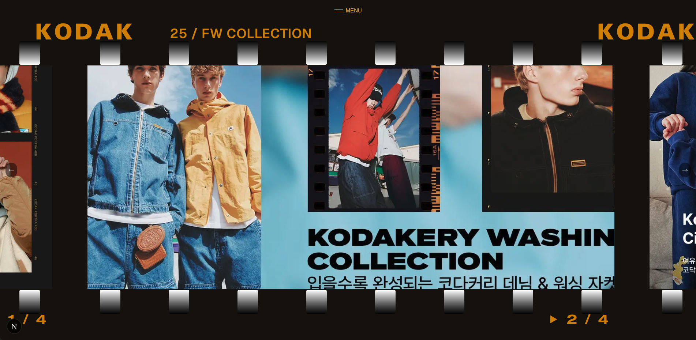

This is a placeholder paragraph for the Kodak project. Here you can describe the project, its purpose, and the key features or concepts you want to highlight. This text will appear in the normal paragraph style.
You can add more paragraphs as needed to fully explain your project. The structure allows for a mix of regular text and blockquotes to create visual variety and emphasis.
This is a placeholder blockquote for Kodak. Blockquotes are used for indented text that stands out from the regular paragraphs. You can use this style for quotes, important notes, or to emphasize particular aspects of your project.Another paragraph of normal text can follow the blockquote. This allows you to continue your narrative and provide additional context or details about the project.

You can add more paragraphs as needed to fully explain your project. The structure allows for a mix of regular text and blockquotes to create visual variety and emphasis.
Another blockquote can be used to highlight a different aspect of the project, such as technical details, design decisions, or user feedback. This creates a rhythm in the reading experience.
Multiple blockquotes can be placed consecutively if you want to present a series of related points or quotes in an indented format.Final paragraph to wrap up the content section. You can add images, links, and other content as needed to complete your project documentation.
Kodak, 2024
Project Documentation
Resources
Additional Resource Link
References
Related Project or Article
Project Documentation
Resources
Additional Resource Link
References
Related Project or Article